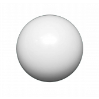
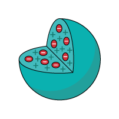
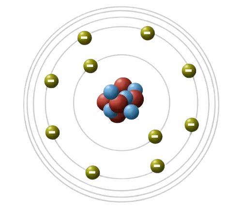
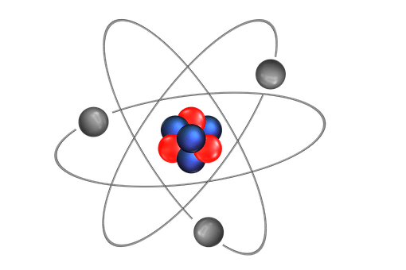

O Modelo Atômico de Dalton apresenta as substâncias como sendo constituídas de pequenas partículas chamadas de átomos. O átomo proposto por Dalton seria uma partícula esférica, maciça e indivisível. Nos seus postulados, o cientista afirmava que os átomos dos diferentes elementos têm distintas propriedades, mas todos os átomos do mesmo elemento são exatamente iguais. Nas alterações químicas, o átomo participa como um todo. Os átomos não se alteram quando formam compostos químicos. Eles não podem ser criados nem destruídos.
O Modelo Atômico de Thomson foi o primeiro modelo de estrutura atômica a indicar a divisibilidade do átomo. De acordo com Thomson, o átomo era formado por elétrons presos a uma esfera onde havia carga elétrica positiva. O experimento de Thomson sugeria que os elétrons situavam-se numa parte do átomo que apresentava carga positiva. Desse modo, o átomo de Thomson teria o aspecto de ameixas em um pudim. Por esse motivo, o seu modelo ficou conhecido como o “pudim com passas”.
O Modelo Atômico de Bohr apresenta o aspecto de órbitas onde existem elétrons e, no seu centro, um pequeno núcleo. O físico dinamarquês Niels Henry David Bohr deu continuidade ao trabalho desenvolvido com Rutherford. Por esse motivo, o átomo de Bohr pode também ser chamado de Modelo Atômico de Rutherford – Bohr. Bohr conseguiu explicar como se comportava o átomo de hidrogênio, o que não era possível mediante a teoria atômica de Rutherford.
O modelo atômico de Schrödinger é uma forma comum usada para designar a descrição do átomo por meio da resolução da equação de Schrödinger, A equação é concebida com base em importantes observações obtidas dentro da mecânica quântica, trazendo uma justificativa robusta para a energia do átomo e do elétron. O átomo criado por Schrödinger se baseia na dualidade onda-partícula, no princípio da incerteza, entre outras noções cunhadas no começo do século XX. Trouxe grandes avanços para a compreensão da matéria, pois abriu caminho para uma compreensão mais sólida de átomos polieletrônicos.
